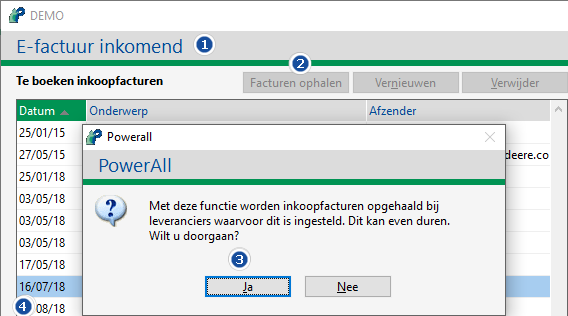
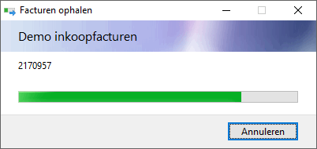

Voorwaarden
Bij Instellingen externe communicatie moet CNH invoice inquiry ingesteld zijn, anders is de knop Facturen ophalen niet zichtbaar bij E-Inkoopfacturen inboeken.
Invoice inquiry
Om nieuwe facturen op te halen, doorloopt u de volgende stappen:
-
Ga naarE-factuur inkomend (KEI).
-
Kies voor de knop Facturen ophalen.
-
Kies voor de knop Ja.


De nieuwe facturen worden opgehaald en toegevoegd.